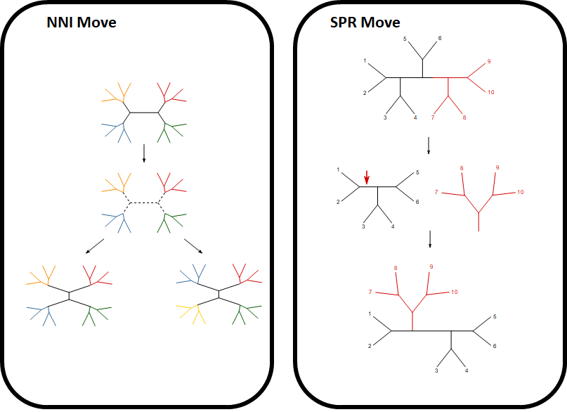
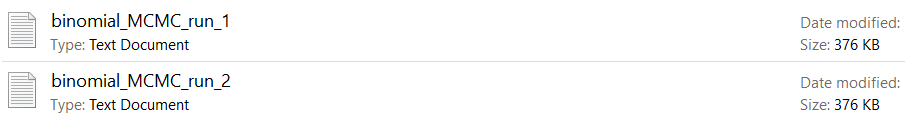
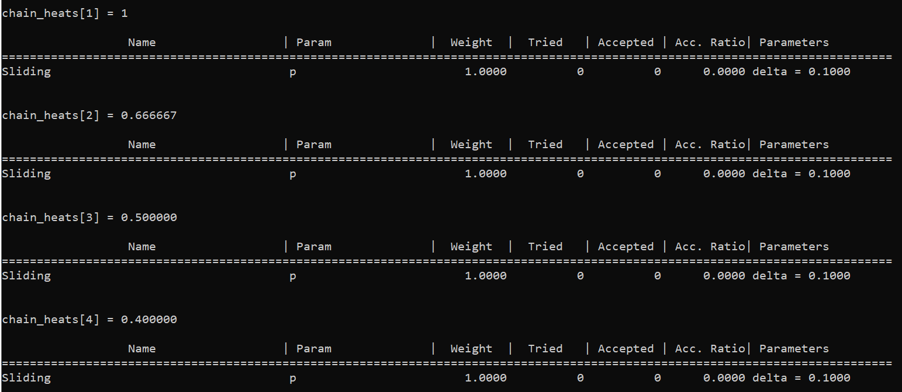

RevBayes comes with a suite of functions and analyses, each with their own idiosyncracies and nuances.
Here you will find an assortment of tips and guides that are either of general use or topics that are not explicitly covered in tutorials. Topics are listed the lefthand side under the table named Overview.
More in depth tutorials for most specific models in RevBayes can be found on the Tutorials page on the RevBayes site. If you are just beggining with RevBayes, we would recommend the Getting Started for familiarizing yourself with the syntax and language and the Intro to MCMC for the basics of creating a model and running MCMC for inference.
Additionally, if you ever want to learn more about a specific function in RevBayes, you can either look at the Documentation page on the website or type ? before any function in the RevBayes terminal (e.g., ?sqrt()) to get information about the function purpose, arguments, and output.
Moves
Given infinite time, any MCMC proposal scheme will converge on the posterior distribution. However, since time is finite, we need to carefully consider the moves we chose on parameters to efficiently approximate the sampling distribution.
In this section we will discuss how to identify inefficient moves and poor mixing as well as the components of a move scheme that can be modulated to increase MCMC effectiveness. Further convergence diagnostics can be found in the Convergence Assessment tutorial.
Choosing and Optimizing Moves
In this section we will discuss the things you will want to consider when choosing moves for your MCMC and how we can optimize those moves to efficiently sample the posterior.
Choosing the Right Type of Move
For most types of parameters there are a plethora moves implemented in RevBayes. When choosing moves it is important to consider the size and scale of the move relative to the parameter space that they operate upon. For example, let us consider the binomial coin-flipping scenario posed in Introduction to MCMC using RevBayes tutorial where we are trying to estimate the probability of a coin landing on heads, $p$. In this case we know that the parameter $p$ is bounded between $0$ and $1$ so we would want to consider moves that efficiently move around this space. The move mvScale is a valid option for our parameter $p$ but it won’t move around the space very effectively as this move multiplies the current value by some scalar which can often propose values on a different order of magnitude. Alternatively, we could chose mvSlide to propose new values within some window from the current value; this move is more better for proposing values between 0 and 1. Since moves often act in drastically different ways and on various scales, it can be useful to use multiple different types of moves on the same parameter to search space efficiently.
The Size of Moves
Although we have chosen an appropriate type of move we still need to consider the size of the move itself. In the case of mvSlide the function for the move has the parameter delta which is used to specify the size of the window around the current value $p$. In other words, the move proposes a new value $p’$ by choosing a value at random on the interval $(p-\delta,p+\delta)$. Large values of delta will result in proposals that often fall outside of the interval $(0,1)$ while too small of a delta will cause the MCMC to explore the parameter space slowly and inefficiently. Most moves on continous variables have parameters that control the relative size of the move, in the case of mvSlide, the lambda parameter controls the size of the scalar.
We can qualitatively assess the adequacy of size parameters of moves by using TRACER to view the trace. In we can see an example of a well-mixing MCMC, the catapillar-like appearance is a qualitative sign that the parameter is efficiently moving around the parameter space. If the move is too large the trace will look blocky, almost like a city skyline. Large moves often cause proposals to be rejected which is why we see the trace having the same value for many generations. Conversely, if we set too small of a move then we will accept most moves and the trace will appear to slowly meander about parameter values.
Mixing of the mvSlide move on sampling the probability of flipping heads $p$. The left image depicts the trace when moves are too small. The image in the center depicts moves that are too big. The image on the right depicts moves that are just right.
We can directly see how often proposals on specific moves are accepted or rejected by using the operatorSummary() method on an mcmc object (see ).
Output of the operatorSummary method of an mcmc object after performing an analysis. On the leftmost column we can see each move and the node that it operates on. We can also see the weight of each move, how often it was proposed, and how often it was accepted. On the far right we can see the tuning argument for each move if it has one, in the case of mvSlide this is delta
We can see that almost every proposal was accepted for the move with the smallest window size while the largest move rejected most proposals. In general we want a move that isn’t too small such that it moves slowly but isn’t so large that it rejects most proposals, this is known as the Goldilock’s Principle. Roberts et al. (1997) found an optimal acceptance ratio of $0.234$ for a multivariate target distributions with i.i.d. components. Although being able to break the posterior into i.i.d. components is unrealistic for phylogenetic analyses, numerical studies have shown acceptance rates to be robust to this assumption and rates between $0.1$ and $0.6$ are still reasonably efficient (Roberts and Rosenthal 2001; Rosenthal 2011).
Move sizes on trees
The two most common moves on tree topology are the Nearest Neighbor Interchange (NNI) move and the Subtree Pruning and Regrafting (SPR) move. The NNI move rearanges the connectivity between four subtrees while SPR moves prune a subtree and regraft it on another part of the tree . Since these moves define specific opertations on the phylogeny, they do not have arguments to adjust the size of the moves. Instead, it may be useful to think of the moves themselves as ‘big’ or ‘small’ based on their inherent qualities.
One way to assess the size of these topology moves is to consider how many different topologies we can obtain by performing one move. This often speaks to how interconnected tree topologies are given a specific move. If many topologies are connected by a move then we can think of this as being able to move from one topology to another in a fewer number of moves and would be considered a large move. In this sense we would consider NNI moves to be considerably smaller than SPR moves; NNI moves on a given internal branch has only 2 other alternative topologies while an SPR move on a given internal branch can be pruned and regrafted to any other branch on the phylogeny, making it connected to more topologies.
The other way we may want to evaluate the relative size of moves is by considering the diameter of the tree space of a move (St. John 2016). The diameter of a tree space for a given move is defined the maximal distance between any two topologies. Although it is NP-hard to compute the diameter of a tree space, the space of SPR moves has a tighter upper bound on the diameter than NNI moves. This means that generally we can reach trees in fewer moves with the “bigger” SPR moves than the “smaller” NNI moves.

Two common tree topology moves. Left NNI. Right SPR.
Tuning Moves
Luckily, for moves with an adjustable size, we don’t need trial and error adjusting of that size argument to achieve a certain acceptance rate. We can tune our moves to achieve a certain acceptance ratio.
When creating a move that has an adjustable size, we can set the tune argument to TRUE, this will adjust the size of the move so the acceptance rate approaches the value given in tuneTarget.
Before running our MCMC analysis, we can tune our parameters by using the tuningInterval argument in either the burnin or run methods on an mcmc object (see ). This means that every tuninginterval MCMC generations, it will try to adjust the size of the move to reach the desired tuning interval.
Output of operatorSummary after tuning the moves for $100,000$ generations. The moves in this image started with the same size values as . We can notice that the value delta has is different from when it started and the acceptance rate for each move approaches 0.44 which is the default tuning target
Creating a Move Scheme
After we’ve chosen the moves we want, we need to specify how often those moves get called and how they are scheduled. First, for any function that creates a move, there is an argument called weight.
Although the specific details vary between which move scheduler is used, the weights correspond to how often the move gets used.
Given finite resources, we may want to upweight or downweight certain nodes to focus our resources. Analyses may contain nuisance parameters, or parameters we aren’t particularly interested in estimating; we could downweight these to spend more time ensuring our parameters of interest are well sampled. Additionally, we may want to upweight parameters that are complex or difficult to sample, this is often done for moves regarding the tree topology. We know that the number tree topologies grow for a given number of taxa, specifically for $n$ taxa there are $(2n-3)!!$ different rooted topologies (NOTE: we are using the double factorial function, not the factorial function used twice).
Since the space of tree topologies grows dramatically with the number of taxa, we may want to upweight moves on the tree topology accordingly.
In practice we usually set the weight for topology moves to be proportional to the number of tips on the tree, though even this is a conservative scaling for the weight relative to the size of tree topology space
We can set up a move schedule that determines the order of moves with the moveschedule argument of the mcmc function. There are $3$ different options for moveschedule:
sequential: Each MCMC cycle moves get performed in the order that they are entered into the move vector. We perform each move a number of times that corresponds to the weight of that move. For example, if we specify a weight of $4.35$ on a move then that move will be performed $4$ times garuanteed and then there is $0.35$ probability of the move being performed a $5^{th}$ time. After that, the scheduler moves on to the next move in the moves vector
single: This scheduler only considers one move each MCMC cycle. A move gets picked at random based on the weights. Moves with higher weights relative to the other moves in the move vector will be picked more often.
random: This scheduler is similar to the single move scheduler except that multiple moves get picked at random each cycle. The number of moves each cycle is the sum of the wieghts for all the moves in the move vector.
Multiple Independent Runs
There are a variety of scenarios where it may be helpful to run an analysis multiple times independently. First, one way of assessing whether our MCMC converged on the posterior distribution is by looking at multiple independent runs and asking how similar they are to one another. The Convergence Assessment tutorial, in particular, makes use of multiple runs. It can also be helpful to have multiple runs for the purposes of good mixing and reducing autocorrelation between samples.
We can run multiple analyses by adjusting the nruns argument of an mcmc() function.
If we only adjust the nruns argument and perform an analysis with the run() method then will notice our MCMC generates multiple output log files. We can see that each run in our multiple run log outputs get saved in the style MCMCoutput_run_x.log.
###We assume we already created these objects from the Binomial MCMC tutorial
my_model ##The model
my_moves ##The vector of moves for the parameters we are inferrring
my_monitors ##The vector of monitors used to record our MCMC analysis
##create an mcmc object
my_mcmc = mcmc(my_model, my_moves, my_monitors,nruns=2)

Files generated from running the code above with multiple runs.
Alternatively, if we want to save our MCMC outputs in one file, we can change the combine argument in the mcmc() function. If the combine argument is used then each run will save in the same file but will generate an additional column titled Replicate_ID that denotes which run created each observation. combine can take the values "sequential" or "mixed".
Metropolis Coupled MCMC
One common concern with Bayesian phylogenetic inference is being entrapped in a local optimum. Posterior distributions can be multimodal and efficiently moving between optima during MCMC is a difficult task, even with a good proposal scheme.
Metropolis Coupled Markov Chain Monte Carlo is a common technique in phylogenetic analysis to efficiently move around a parameter space with local optima (Altekar et al. 2004). Briefly, this technique has mutiple MCMC chains running in parallel, with one ‘cold’ chain that records operates as a normal MCMC,recording parameter values at prespecified intervals, and multiple ‘hot’ chains that effectively have a flattened posterior distribution.
These hot chains are less likely to reject move proposals, making it easier for them to move into low posterior density valleys to move between local optima. Periodically, the chains will swap their ‘heating’ and current parameter values.
The idea here is that the ‘hot’ chains can efficiently move around large swathes of parameter space and ocassionally swap values with the ‘cold’ chain as it comes across different optima.
Formally, a heating value refers to the posterior distribution being raised to some power $\beta$, where lower values of $\beta$ effectively flatten out the posterior distribution.
We can use the mcmcmc() function in RevBayes to perform Metropolis Coupled Markov Chain Monte Carlo.
This function is very similar to the mcmc() function in terms of arguments and associated methods but contains a few extra arguments that focus around the multiple parallel chains.
Those additional arguments are:
nchains: The number of chains to run in parallel.
swapInterval: This is how often chains attempt to swap their heats
deltaHeat: a numeric that specifies the heat of each chain. If there are $i$ chains then the heat of the $i^{th}$ chain is denoted as $\frac{1}{1+deltaHeat*i}$. Here we can see that the heat $\beta$ decreases with each subsequent chain, making them ‘hotter’.
heats: A vector that explicity defines the heat of each chain. The first element must be $1.0$ (it is the cold chain) and the length of the vector must match nchains.
NOTE: Only one of deltaHeat or heats are required for mcmcmc(). These arguments are used to specify the heat $\beta$ of each chain.
For example, for a chain with nchains=4, setting either deltaHeat=0.5 or heats=[1, 2/3, 1/2, 2/5] would be equivalent.
After making our mcmcmc object, we can use the operatorSummary() method to inspect the heats of each chain ().

Partial output of the operatorSummary() method of mcmcmc objects. We can see each chain with their respective heats and proposed moves.
tuneHeat: A boolean specifying whether the heats $\beta$’s should be tuned during burnin.
tuneHeatTarget: The acceptance probability of adjacent chain swaps targeted by heats auto-tuning.
NOTE: Much like how moves can be tuned to achieve ideal acceptance proportions, the heats can be adjusted so swapping between chains at some ideal proportion.
Specifically, if tuneHeat is TRUE then during burnin the heats will tune such that the proportion of successfully swapping the heats between any two adjacent chains is tuneHeatTarget. we can use the operatorSummary() method on the mcmcmc ().
Partial output of the operatorSummary() method of mcmcmc objects. Each potential chain swap is listed along with the number of times each type of swap was proposed and accepted.
SwapMethod: The method at which chain swaps are proposed. Valid options are:
"neighbor": Swaps for $i^{th}$ chain will be proposed to the $i\pm 1$ chains.
"random": Swaps between chains will be proposed at random
"both": both "neighbor" and "random" type chain swaps will be proposed.
swapInterval2: This argument is only used if swapMethod="both". In that case then swapInterval denotes how often chains attempt swaps using the neighbor method while swapInterval2 denotes how often chains attempt swaps using the random method. If no argument is provided for swapInterval2 then both methods will use the same interval provided in swapInterval.
swapMode: A string of either "single" or "multiple", that denotes how many chain swaps are proposed at each interval. If swapMode="multiple" then $(nchains-1)$ swaps will be proposed for nieghbor type chain swaps and ${nchains \choose 2}$ swaps for random type chain swaps.
###We assume we already created these objects
my_model ##The model
my_moves ##The vector of moves for the parameters we are inferrring
my_monitors ##The vector of monitors used to record our MCMC analysis
# Create an mcmcmc object
myMcmcmcObject = mcmcmc( mymodel, monitors, moves, nchains=4, deltaHeat=5)
# print the summary of the operators (now tuned)
##In particular take note of the chain heats before tuning
myMcmcmcObject.operatorSummary()
# Tune heats
myMcmcmcObject.burnin( generations = 40000, tuningInterval = 100)
# print the summary of the operators (now tuned). heats should have changed
myMcmcmcObject.operatorSummary()
MCMC under the Prior
Before we perform our phylogenetic analysis using our data, we may first want to run the MCMC under the prior. Running our analysis under the prior ignores all of our data and likelihood computations associated with our data and uses prior distributions to copmute the sampled posterior. Since we are not performing any likelihood calculations the MCMC should sample relatively quickly, making this a good way to assess the efficiency of our move scheme. This can also be a good way to ensure the model was set up correctly and gauge how long we will need to run our MCMC. As a result of not using any data when running an analysis under the prior, our sampled posterior should match the distributions we used for our prior beliefs. When running an analysis in this way, if our posterior looks nothing like our prior we can either say that we haven’t ran the analysis long enough or the model may be set up incorrectly.
Assuming that we’ve already set up our model, moves, and monitors in RevBayes, we can run an analysis under by setting the underPrior argument to TRUE when using either the run or burnin methods on an mcmc object:
###We assume we already created these objects
my_model ##The model
my_moves ##The vector of moves for the parameters we are inferrring
my_monitors ##The vector of monitors used to record our MCMC analysis
##create an mcmc object
my_mcmc = mcmc(my_model, my_moves, my_monitors)
##Perform an analysis under the prior
my_mcmc.run(generations = 10000, underPrior=TRUE)
Altekar G., Dwarkadas S., Huelsenbeck J.P., Ronquist F. 2004. Parallel metropolis coupled Markov chain Monte Carlo for Bayesian phylogenetic inference. Bioinformatics. 20:407–415.
Roberts G.O., Gelman A., Gilks W.R. 1997. Weak convergence and optimal scaling of random walk Metropolis algorithms. The annals of applied probability. 7:110–120.
Roberts G.O., Rosenthal J.S. 2001. Optimal scaling for various Metropolis-Hastings algorithms. Statistical science. 16:351–367.
Rosenthal J.S. 2011. Optimal proposal distributions and adaptive MCMC. Handbook of Markov Chain Monte Carlo. 4.
St. John K. 2016. Review Paper: The Shape of Phylogenetic Treespace. Systematic Biology. 66:e83–e94.10.1093/sysbio/syw025